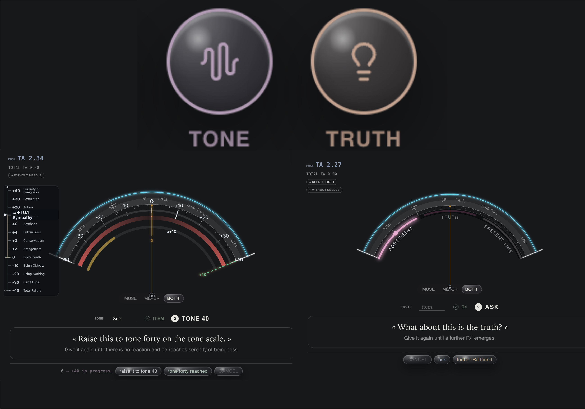
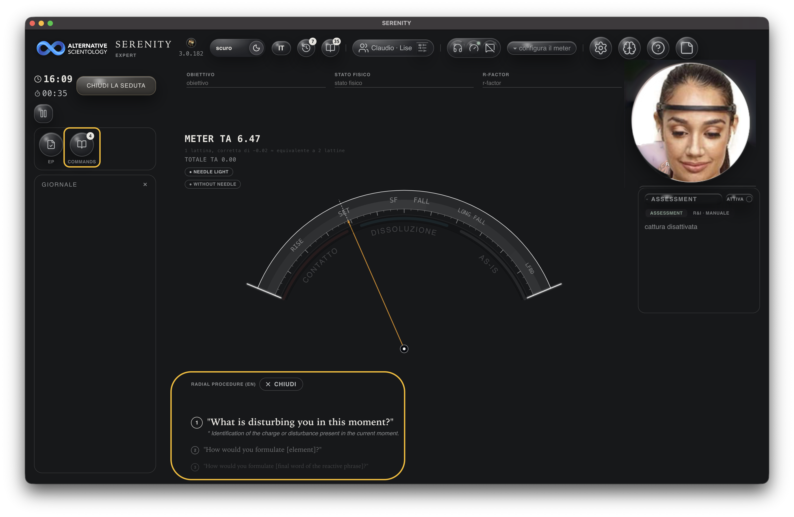
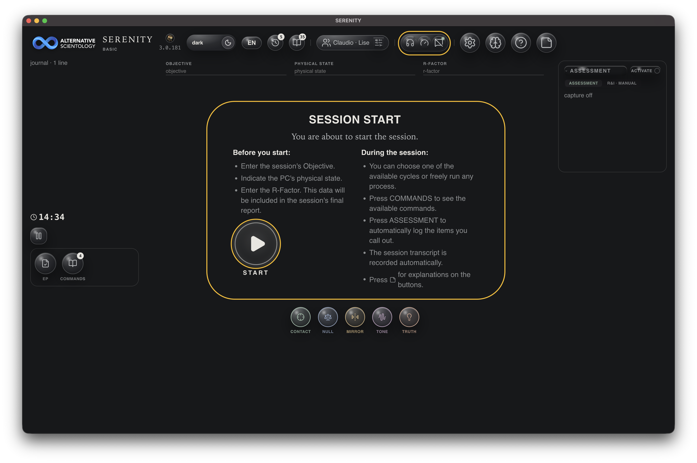
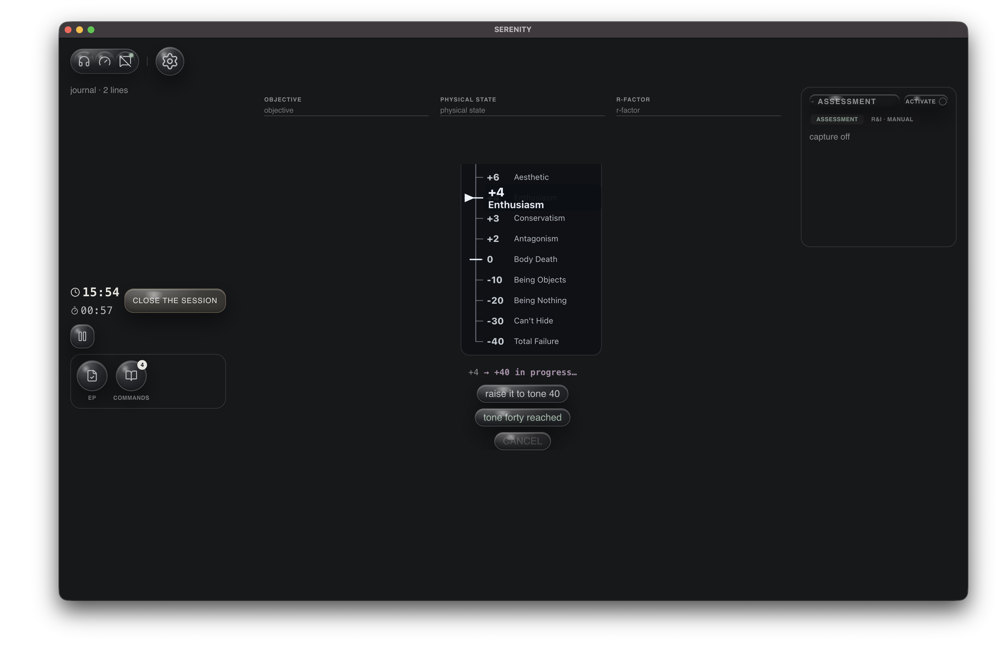
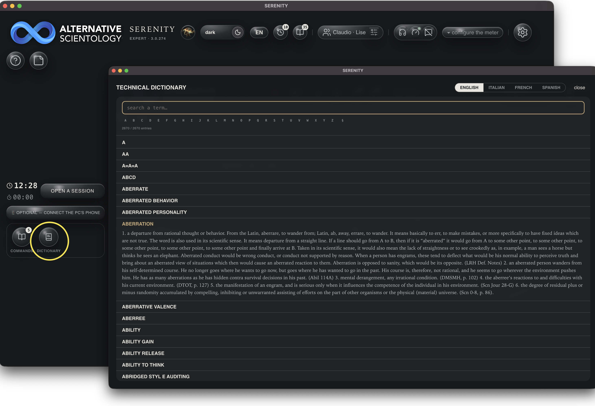

SERENITY
Mode d'emploi — pas de théorie ici, juste les gestes : quel bouton, ce qui apparaît, comment fermer. Manuale d'uso — nessuna teoria qui, solo i gesti: quale pulsante, cosa appare, come chiudere. User manual — no theory here, just the gestures: which button, what appears, how to close it.
1. Premier lancement1. Primo avvio1. First launch
-
Qui audite ?Chi audita?Who is auditing?
— clique sur ton profil, ou sur
+ Newpour en créer un (nom, portrait, sexe). clicca sul tuo profilo, o su+ Newper crearne uno (nome, ritratto, sesso). click your profile, or+ Newto create one (name, portrait, sex). - Seul, ou avec un préclair ?Da solo, o con un preclear?Alone, or with a preclear? — SOLO (tu es aussi le sujet) ou Avec un préclair (une autre personne, avec sa propre photo/nom). SOLO (sei anche tu il soggetto) oppure Con un preclear (un'altra persona, con la sua foto/nome). SOLO (you are also the subject) or With a preclear (another person, with their own photo/name).
-
Qui est le préclair ?Chi è il preclear?Who is the preclear?
— clique sur son profil, ou
+ Newpour en créer un. N'apparaît qu'« Avec un préclair » à l'étape précédente — en SOLO, cette question n'existe pas. clicca sul suo profilo, o+ Newper crearne uno. Compare solo scegliendo "Con un preclear" al passo precedente — in SOLO questa domanda non esiste. click their profile, or+ Newto create one. Only appears after choosing "With a preclear" at the previous step — in SOLO this question doesn't exist. - Ici, ou à distance ?Qui, o a distanza?Here, or remote? — Ici (auditor et préclair dans la même pièce) ou À distance (chacun sur son écran). Même condition que l'étape précédente : n'existe pas en SOLO. Qui (auditor e preclear nella stessa stanza) oppure A distanza (ognuno sul suo schermo). Stessa condizione del passo precedente: non esiste in SOLO. Here (auditor and preclear in the same room) or Remote (each on their own screen). Same condition as the previous step: doesn't exist in SOLO.
- Combien veux-tu voir ?Quanto vuoi vedere?How much do you want to see? — Basique (juste l'essentiel) ou Expert (tous les chiffres). Sans réponse en 7 secondes, ça part sur Basique. Basico (solo l'essenziale) o Esperto (tutti i numeri). Senza risposta in 7 secondi, parte su Basico. Basic (just what's needed) or Expert (every number). No answer in 7 seconds switches to Basic.
Ce que Basique cache (toujours réactivable depuis CONFIG) : le panneau MNA, le panneau Santé Système, et les chiffres exacts secondaires (Total TA cumulé, vitesse) — l'aiguille/les bandes et la lecture du moment restent visibles dans les deux niveaux. Cosa nasconde Basico (sempre riaccendibile da CONFIG): il pannello MNA, il pannello Santé Système, e i numeri esatti secondari (Total TA cumulativo, velocità) — l'ago/le bande e la lettura del momento restano visibili in entrambi i livelli. What Basic hides (always re-enabled from CONFIG): the MNA panel, the Santé Système panel, and secondary exact numbers (cumulative Total TA, velocity) — the needle/bands and the current reading stay visible at both levels.

2. L'écran principal2. Schermata principale2. Main screen
La barre du haut, de gauche à droite : La barra in alto, da sinistra a destra: The top bar, left to right:
| Bouton | Fait quoi |
|---|---|
| Pulsante | Cosa fa |
| Button | What it does |
| thème / langue | clair ↔ sombre, et la langue de l'interface (5 langues). |
| tema / lingua | chiaro ↔ scuro, e la lingua dell'interfaccia (5 lingue). |
| theme / language | light ↔ dark, and the interface language (5 languages). |
| 🕐 Historique | toutes tes séances passées — voir §9. |
| 🕐 Storico | tutte le tue sedute passate — vedi §9. |
| 🕐 History | all your past sessions — see §9. |
| Processus | charge un fichier de commandes/procédure — voir §7. |
| Processi | carica un file di comandi/procedura — vedi §7. |
| Processes | loads a commands/procedure file — see §7. |
| profil · seul/préclair | rouvre les questions du premier lancement (5, ou 3 en SOLO — voir §1). |
| profilo · solo/preclear | riapre le domande del primo avvio (5, o 3 in SOLO — vedi §1). |
| profile · alone/preclear | reopens the first-launch questions (5, or 3 in SOLO — see §1). |
| MUSE / METER / SANS INSTRUMENTS | connecte le casque MUSE, le Theta‑Meter USB, ou choisit de travailler sans aucun des deux. En Basique, ces trois boutons se replient en un seul point d'état — un clic dessus les déplie, et ils restent dépliés. |
| MUSE / METER / SENZA STRUMENTI | collega il casco MUSE, il Theta‑Meter USB, oppure sceglie di lavorare senza nessuno dei due. In Basico questi tre pulsanti si riducono a un solo pallino di stato — un clic li apre, e restano aperti. |
| MUSE / METER / NO INSTRUMENTS | connects the MUSE headset, the USB Theta‑Meter, or chooses to work with neither. In Basic, these three buttons collapse into a single status dot — one click expands them, and they stay expanded. |
| ⚙️ CONFIG | réglages avancés (niveau d'affichage, calibration, etc.). |
| ⚙️ CONFIG | impostazioni avanzate (livello di visualizzazione, calibrazione, ecc.). |
| ⚙️ CONFIG | advanced settings (display level, calibration, etc.). |
| ? Guide | cette page. |
| ? Guida | questa pagina. |
| ? Guide | this page. |
| 🗒️ Help | affiche/cache un post-it d'explication sous chaque bouton de l'écran actuel — différent de Guide, qui ouvre le manuel entier. |
| 🗒️ Help | mostra/nasconde un post-it di spiegazione sotto ogni pulsante della schermata attuale — diverso da Guida, che apre il manuale intero. |
| 🗒️ Help | shows/hides an explanation post-it under every button on the current screen — different from Guide, which opens the whole manual. |
Connecter le Theta‑Meter (METER). Clique l'icône cadran : la fenêtre de sélection USB du système/navigateur s'ouvre — choisis le Theta‑Meter. L'interface propre du Theta‑Meter (son propre écran/logiciel) n'est volontairement PAS utilisée : SERENITY lit directement le signal électrique brut par USB et dessine sa propre aiguille, calibrée avec sa propre échelle TA — inutile de garder ouvert un autre programme ou de regarder l'appareil lui-même, tout ce qui compte s'affiche déjà dans SERENITY. Collegare MUSE. Clicca l'icona cuffie: si apre la finestra di associazione Bluetooth del sistema/browser — scegli il MUSE dall'elenco. Una volta connesso, il pallino diventa verde e mostra il livello di batteria.
Collegare il Theta‑Meter (METER). Clicca l'icona quadrante: si apre la finestra di selezione USB del sistema/browser — scegli il Theta‑Meter. L'interfaccia propria del Theta‑Meter (il suo schermo/software) NON viene volutamente usata: SERENITY legge direttamente il segnale elettrico grezzo via USB e disegna il proprio ago, tarato con la propria scala TA — non serve tenere aperto un altro programma né guardare l'apparecchio stesso, tutto ciò che conta compare già in SERENITY. Connecting MUSE. Click the headphones icon: the system/browser Bluetooth pairing window opens — pick the MUSE from the list. Once connected, the dot turns green and shows the battery level.
Connecting the Theta‑Meter (METER). Click the dial icon: the system/browser USB picker opens — pick the Theta‑Meter. The Theta‑Meter's own interface (its own screen/software) is deliberately NOT used: SERENITY reads the raw electrical signal directly over USB and draws its own needle, calibrated with its own TA scale — no need to keep another program open or watch the device itself, everything that matters already shows up in SERENITY.


3. Démarrer une séance3. Avviare una seduta3. Starting a session
En bas à gauche : Ouvrir une séance. Un clic, et le cadran apparaît au centre — cinq cercles, un par méthode. In basso a sinistra: Apri una seduta. Un clic, e il quadrante appare al centro — cinque cerchi, uno per metodo. Bottom left: Open a session. One click, and the dial appears in the centre — five circles, one per method.
Facultatif — connecter le téléphone du PC. Quand l'auditor et le préclair (PC) sont dans la même pièce mais que le PC doit/préfère parler depuis un smartphone (par ex. pour laisser CAM 2 filmer le PC, pas la webcam frontale de l'ordinateur), une pastille « facultatif — connecter le téléphone du PC », en bas à gauche sous « Ouvrir une séance », génère le lien/QR à ouvrir sur le téléphone. Une fois la séance ouverte, le même geste devient une petite icône 📱 ronde, sur la même ligne que PAUSE, juste avant elle — teintée quand le téléphone est bien connecté (« PC ✓ »), neutre sinon. Accessible à tout moment de la séance, pas seulement avant de commencer. Absente en SOLO ou à distance (les deux ont déjà leur propre écran de connexion). Facoltativo — collega il telefono del PC. Quando auditor e preclear (PC) sono nella stessa stanza ma il PC deve/preferisce parlare da uno smartphone (per esempio per lasciare che CAM 2 riprenda il PC, non la webcam frontale del computer), una pillola "opzionale — collega il telefono del PC", in basso a sinistra sotto "Apri una seduta", genera il link/QR da aprire sul telefono. Una volta aperta la seduta, lo stesso gesto diventa una piccola icona 📱 rotonda, sulla stessa riga di PAUSA, subito prima di essa — colorata quando il telefono è davvero collegato ("PC ✓"), neutra altrimenti. Raggiungibile in qualsiasi momento della seduta, non solo prima di cominciare. Assente in SOLO o a distanza (entrambe hanno già il proprio schermo di connessione). Optional — connect the PC's phone. When the auditor and the preclear (PC) are in the same room but the PC needs/prefers to speak from a smartphone (for instance to let CAM 2 film the PC instead of the computer's own front camera), a pill "optional — connect the PC's phone", bottom left under "Open a session", generates the link/QR to open on the phone. Once the session is open, the same action becomes a small round 📱 icon, on the same row as PAUSE, right before it — tinted once the phone is actually connected ("PC ✓"), neutral otherwise. Reachable at any point during the session, not just before starting. Absent in SOLO or remote (both already have their own connection screen).

4. Les 5 méthodes4. I 5 metodi4. The 5 methods
Un seul clic sur un cercle l'arme. Pour fermer sans valider : le bouton FERMER en haut du cadran, à tout moment. Un solo clic su un cerchio lo arma. Per chiudere senza validare: il pulsante CHIUDI in alto sul quadrante, in qualsiasi momento. One click on a circle arms it. To close without validating: the CLOSE button at the top of the dial, at any time.
| Cercle | Un clic dessus | Se ferme |
|---|---|---|
| Cerchio | Un clic sopra | Si chiude |
| Circle | One click on it | Closes |
| CONTACT | arme le cadran ; l'aiguille/les bandes réagissent en direct à ce qui est dit. | automatiquement quand la lecture est faite, ou FERMER. |
| CONTACT | arma il quadrante; l'ago/le bande reagiscono in diretta a quello che viene detto. | automaticamente quando la lettura è fatta, oppure CHIUDI. |
| CONTACT | arms the dial; the needle/bands react live to what's said. | automatically once the read is done, or CLOSE. |
| NULL | arme le cycle NULL → RISE → CLEAR READ, avec ses propres étapes affichées. En Basique, la demande de mock-up reste simple ("demande un mock-up") ; en Expert elle nomme aussi l'issue technique ("NE RECHARGE PAS"). | en suivant les étapes jusqu'au bout, ou FERMER. |
| NULL | arma il ciclo NULL → RISE → CLEAR READ, con le sue tappe mostrate. In Basico la richiesta di mock-up resta semplice ("chiedi un mock-up"); in Esperto nomina anche l'esito tecnico ("NON RICARICA"). | seguendo le tappe fino in fondo, oppure CHIUDI. |
| NULL | arms the NULL → RISE → CLEAR READ cycle, with its own steps shown. In Basic, the mock-up request stays plain ("ask for a mock-up"); in Expert it also names the technical outcome ("NO RECHARGING"). | by following the steps through, or CLOSE. |
| MIRROR | arme le doublement (instantané → doublé → effacé) ; propre à SERENITY. | quand le doublement est confirmé, ou FERMER. |
| MIRROR | arma il raddoppio (istantaneo → doppio → cancellato); proprio di SERENITY. | quando il raddoppio è confermato, oppure CHIUDI. |
| MIRROR | arms the doubling (instant → doubled → erased); specific to SERENITY. | once the doubling is confirmed, or CLOSE. |
| TONE | demande la résistance ; avec instruments, la mesure ; sans, un écran dédié pour choisir le ton (v. chap. 10) — puis "mène-le au ton 40" (répétable), puis "ton 40 atteint". | quand "ton 40 atteint" est cliqué, ou FERMER. |
| TONE | chiede la resistenza; con strumenti, la misura; senza, uno schermo dedicato per scegliere il tono (v. cap. 10) — poi "portalo a tono 40" (ripetibile), poi "tono 40 raggiunto". | quando si clicca "tono 40 raggiunto", oppure CHIUDI. |
| TONE | asks for the resistance; with instruments, it's measured; without, a dedicated screen to choose the tone (see ch. 10) — then "raise it to tone 40" (repeatable), then "tone 40 reached". | once "tone 40 reached" is clicked, or CLOSE. |
| TRUTH | demande de localiser un ITEM, propose un candidat, cherche un ITEM supplémentaire ; propre à SERENITY. | en clôturant le R/I proposé, ou FERMER. |
| TRUTH | chiede di localizzare un ITEM, propone un candidato, cerca un ITEM supplementare; proprio di SERENITY. | chiudendo l'R/I proposto, oppure CHIUDI. |
| TRUTH | asks to locate an ITEM, proposes a candidate, looks for a further ITEM; specific to SERENITY. | by closing the proposed R/I, or CLOSE. |


5. Avec / sans aiguille5. Con / senza ago5. With / without needle
Sous le cadran (CONTACT/NULL uniquement — MIRROR/TONE/TRUTH ont leur propre affichage), un bouton bascule entre l'AIGUILLE classique et trois bandes de couleur (CONTACT / DISSOLUTION / AS-IS) avec une barre de vitesse. Les bandes respirent doucement même à l'arrêt — c'est normal, pas un signal. Sotto il quadrante (solo CONTACT/NULL — MIRROR/TONE/TRUTH hanno la propria visualizzazione), un pulsante alterna tra l'AGO classico e tre bande di colore (CONTACT / DISSOLUZIONE / AS-IS) con una barra di velocità. Le bande respirano piano anche da ferme — è normale, non è un segnale. Below the dial (CONTACT/NULL only — MIRROR/TONE/TRUTH have their own display), a button toggles between the classic NEEDLE and three colour bands (CONTACT / DISSOLUTION / AS-IS) with a speed bar. The bands breathe gently even at rest — that's normal, not a signal.

6. Journal6. Diario6. Journal
Pas de bouton dédié dans la barre du haut. Le panneau Journal se montre depuis CONFIG — case « Journal de session » — comme les autres modules (Santé Système, MNA…). Tant qu'il est caché, un petit texte muet en haut à gauche rappelle juste le nombre de lignes déjà écrites. Nessun bottone dedicato nella barra in alto. Il pannello Diario si mostra da CONFIG — voce "Diario di sessione" — come gli altri moduli (Santé Système, MNA…). Finché resta nascosto, un piccolo testo muto in alto a sinistra ricorda solo il numero di righe già scritte. No dedicated button in the top bar. The Journal panel is shown from CONFIG — "Session journal" checkbox — like the other modules (System Health, MNA…). While hidden, a small muted text top-left just recalls how many lines have already been written.
Une fois affiché : une croix × en haut du panneau le referme (la même case dans CONFIG se décoche). Il liste ce qui a été tapé ou dit pendant la séance — pas de ligne séparée pour les réactions de l'aiguille (la réaction, quand il y en a une, s'affiche à côté du mot qui l'a causée) ni pour les messages système — tout le reste apparaît dans le rapport PDF final. Una volta mostrato: una crocetta × in alto sul pannello lo richiude (la stessa voce in CONFIG si spunta via). Elenca ciò che è stato scritto o detto durante la seduta — nessuna riga separata per le reazioni dell'ago (la reazione, quando c'è, compare accanto alla parola che l'ha causata) né per i messaggi di sistema — tutto il resto compare nel rapporto PDF finale. Once shown: a × at the top of the panel closes it again (the same CONFIG checkbox gets unchecked). It lists what was typed or said during the session — no separate line for needle reactions (the reaction, when there is one, shows next to the word that caused it) nor for system messages — everything else appears in the final PDF report.

7. Processus et COMMANDS7. Processi e COMMANDS7. Processes and COMMANDS
Processus — l'archive PDFProcessi — l'archivio PDFProcesses — the PDF archive
- Clique sur Processus dans la barre du haut : une liste de fichiers apparaît (déposés dans le dossier partagé, ou déjà présents). Clicca su Processi nella barra in alto: appare un elenco di file (depositati nella cartella condivisa, o già presenti). Click Processes in the top bar: a list of files appears (dropped in the shared folder, or already present).
- Clique sur un fichier pour l'ouvrir — il reste affiché à côté de la séance, tu peux le suivre page par page. Clicca su un file per aprirlo — resta visibile accanto alla seduta, puoi seguirlo pagina per pagina. Click a file to open it — it stays visible next to the session, you can follow it page by page.
- Pour l'annuler / le fermer :Per annullarlo / chiuderlo:To cancel / close it: le bouton FERMER en haut du panneau du processus, visible même en faisant défiler la liste des commandes. Il ferme le fichier sans toucher à la séance en cours. il pulsante CHIUDI in alto nel pannello del processo, visibile anche scorrendo l'elenco dei comandi. Chiude il file senza toccare la seduta in corso. the CLOSE button at the top of the process panel, visible even while scrolling the command list. It closes the file without touching the session in progress.

COMMANDS — les procédés prêts à suivreCOMMANDS — i procedimenti pronti da seguireCOMMANDS — the ready-to-follow procedures
- Clique sur COMMANDS (à côté de EP, sous le cadran) : la carte des procédés apparaît — un bouton par procédé, avec le nombre de commandes qu'il contient. Clicca su COMMANDS (accanto a EP, sotto il quadrante): appare la card dei procedimenti — un bottone per procedimento, con il numero di comandi che contiene. Click COMMANDS (next to EP, under the dial): the procedures card appears — one button per procedure, with how many commands it holds.
- Clique sur un procédé : PAS de fenêtre à part — ses commandes prennent directement la place des indications du cycle, dans le même espace, l'une après l'autre. Clicca su un procedimento: NESSUNA finestra a parte — i suoi comandi prendono direttamente il posto delle indicazioni del ciclo, nello stesso spazio, uno dopo l'altro. Click a procedure: NO separate window — its commands take the place of the cycle's own guidance, in the same space, one after another.
- Sous chaque commande, un espace de texte : la réponse du PC — dictée au téléphone si le téléphone est connecté, ou dite au micro local sinon — s'y écrit toute seule au fur et à mesure, en italique gris tant que l'auditeur n'y a pas touché. Dès que l'auditeur clique dedans et tape, c'est son propre texte qui prend la suite : il peut réécrire par-dessus la transcription du PC, sans rien perdre. Sotto ogni comando, uno spazio di testo: la risposta del PC — dettata al telefono se il telefono è collegato, oppure detta al microfono locale altrimenti — si scrive da sola man mano, in corsivo grigio finché l'auditor non la tocca. Appena l'auditor ci clicca dentro e scrive, è il suo testo a proseguire: può riscriverci sopra alla trascrizione del PC, senza perdere nulla. Below each command, a text field: the PC's answer — dictated over the phone if one is connected, or spoken into the local microphone otherwise — writes itself in as it's said, in grey italics until the auditor touches it. As soon as the auditor clicks in and types, their own text takes over: they can write over the PC's transcript without losing anything.
- Pour le fermer :Per chiuderlo:To close it: la croix × en haut de la carte du procédé. Ça ferme le procédé sans toucher à la séance — les indications normales du cycle reprennent leur place. la crocetta × in alto sulla card del procedimento. Chiude il procedimento senza toccare la seduta — le indicazioni normali del ciclo riprendono il loro posto. the × at the top of the procedure's card. This closes the procedure without touching the session — the cycle's normal guidance takes its place back.
~/EQUILIBRIUM/COMANDI/Procedimenti) ; seule l'application installée peut le lire ou l'ouvrir. Dans un navigateur ordinaire, la carte reste vide et "ouvrir le dossier" ne fait rien — ce n'est pas une panne, juste l'absence du disque local que seule l'app a.
COMMANDS ha bisogno dell'applicazione SERENITY installata (il .app dal DMG) — non di una scheda Chrome/browser aperta su un indirizzo di sviluppo. La cartella dei procedimenti vive sul disco (~/EQUILIBRIUM/COMANDI/Procedimenti); solo l'app installata può leggerla o aprirla. In un browser normale la card resta vuota e "apri cartella" non fa nulla — non è un guasto, è solo l'assenza del disco locale che ha solo l'app.
COMMANDS needs the installed SERENITY app (the .app from the DMG) — not a Chrome/browser tab pointed at a development address. The procedures folder lives on disk (~/EQUILIBRIUM/COMANDI/Procedimenti); only the installed app can read or open it. In an ordinary browser the card stays empty and "open folder" does nothing — that's not a fault, just the missing local disk access only the app has.

8. Fermer la séance8. Chiudere la seduta8. Closing the session
Le bouton fermer la séance (barre du haut, teinté ambre discret pour se distinguer d'"ouvrir") termine la séance et génère le rapport PDF automatiquement en arrière-plan — pas de bouton "exporter" à part. Il pulsante chiudi la seduta (barra in alto, tinta ambra discreta per distinguersi da "apri") termina la seduta e genera il rapporto PDF automaticamente in sottofondo — nessun pulsante "esporta" a parte. The close the session button (top bar, subtly amber-tinted to stand apart from "open") ends the session and generates the PDF report automatically in the background — no separate "export" button.

9. Historique9. Storico9. History
- Une ligne par séance : date, durée, PC, auditeur, quelques chiffres. Una riga per seduta: data, durata, PC, auditor, qualche numero. One line per session: date, duration, PC, auditor, a few numbers.
- View ouvre le rapport dans une fenêtre ; PDF le télécharge ; la corbeille supprime cette séance. View apre il rapporto in una finestra; PDF lo scarica; il cestino elimina quella seduta. View opens the report in a window; PDF downloads it; the trash icon deletes that session.
- Les six champs en haut filtrent par date/PC/auditeur/processus/objectif/élément. I sei campi in alto filtrano per data/PC/auditor/processo/obiettivo/elemento. The six fields at the top filter by date/PC/auditor/process/objective/item.
- Tout sélect. coche toutes les séances affichées (après filtrage) pour les supprimer en une fois. Seleziona tutto spunta tutte le sedute mostrate (dopo il filtro) per eliminarle in una volta. Select all checks every session currently shown (after filtering) to delete them all at once.

10. Auditer en Basique, sans instruments10. Audire in Basico, senza strumenti10. Auditing in Basic, without instruments
Ce chapitre reprend, pour ce cas précis, ce qui est déjà dit ailleurs (chap. 1, 3, 4) — utile pour auditer sans jamais chercher une fonction dans un autre chapitre. Questo capitolo riprende, per questo caso preciso, quel che è già detto altrove (cap. 1, 3, 4) — utile per audire senza dover cercare una funzione in un altro capitolo. This chapter gathers, for this exact case, what's already said elsewhere (ch. 1, 3, 4) — useful to audit without hunting a feature across chapters.
Choisir Basique + sans instruments. À la dernière question du premier lancement ("Combien veux-tu voir ?"), choisis Basique. Ensuite, en ouvrant la séance ("avec quoi audite-t-on ?"), Séance sans instruments est déjà coché — c'est le choix par défaut en Basique, pas besoin de le chercher parmi MUSE/BOÎTES. Scegliere Basico + senza strumenti. All'ultima domanda del primo avvio ("Quanto vuoi vedere?"), scegli Basico. Poi, aprendo la seduta ("con che cosa si audita?"), Séance senza strumenti è già spuntata — è la scelta di default in Basico, non serve cercarla fra MUSE/BOÎTES. Choosing Basic + without instruments. At the last first-launch question ("How much do you want to see?"), pick Basic. Then, when opening the session ("what will you audit with?"), Session without instruments is already checked — it's the default choice in Basic, no need to hunt for it among MUSE/CANS.
L'écran SESSION START. La séance est déjà ouverte (le journal tourne), mais un grand écran couvre le cadran : le rappel de ce qu'il faut renseigner (Objectif, État physique, R-Factor — les trois champs en haut) et de ce qu'on peut faire pendant la séance (choisir un cycle, COMMANDS, ASSESSMENT, transcript automatique). En dessous de la phrase sur le R-Factor : un bouton rond qui pulse, START. Tant qu'il n'est pas cliqué, le chronomètre de séance et le bouton FERMER LA SÉANCE restent cachés — seule l'heure réelle, en haut à gauche, reste visible. Un clic sur START libère l'écran : le chronomètre démarre, FERMER LA SÉANCE apparaît, et les cinq cercles des méthodes sont là. Lo schermo SESSION START. La seduta è già aperta (il diario gira), ma un grande schermo copre il quadrante: il richiamo di cosa va compilato (Obiettivo, Stato fisico, R-Factor — i tre campi in alto) e di cosa si può fare durante la seduta (scegliere un ciclo, COMMANDS, ASSESSMENT, trascritto automatico). Sotto la frase sull'R-Factor: un bottone rotondo che pulsa, START. Finché non viene cliccato, il cronometro di seduta e il bottone CHIUDI LA SEDUTA restano nascosti — solo l'ora reale, in alto a sinistra, resta visibile. Un clic su START libera lo schermo: il cronometro parte, CHIUDI LA SEDUTA appare, e i cinque cerchi dei metodi sono lì. The SESSION START screen. The session is already open (the journal is running), but a large screen covers the dial: a reminder of what to fill in (Objective, Physical state, R-Factor — the three fields at the top) and what you can do during the session (choose a cycle, COMMANDS, ASSESSMENT, automatic transcript). Below the sentence about the R-Factor: a pulsing round button, START. Until it's clicked, the session timer and the CLOSE THE SESSION button stay hidden — only the real clock, top left, stays visible. Clicking START frees the screen: the timer starts, CLOSE THE SESSION appears, and the five method circles are there.

Les trois champs disparaissent tout seuls — et reviennent d'un geste. Une fois la séance lancée, Objectif/État physique/R-Factor restent en haut, au-dessus du cadran, remplis ou non. Dès qu'AU MOINS un des trois contient du texte, ils disparaissent d'eux-mêmes 10 secondes après la dernière frappe (écrire encore repousse la disparition, ne l'annule pas) — vides, ils restent affichés indéfiniment, rien à cacher. À leur place : un petit trait fin avec « OBIETTIVO · STATO · R-FACTOR » dessous — un seul geste dessus les ramène, un second geste les referme. I tre campi spariscono da soli — e tornano con un gesto. Una volta avviata la seduta, Obiettivo/Stato fisico/R-Factor restano in alto, sopra il quadrante, riempiti o no. Appena ALMENO uno dei tre ha del testo dentro, spariscono da soli 10 secondi dopo l'ultimo tocco (scrivere ancora rimanda la sparizione, non la annulla) — vuoti, restano a schermo indefinitamente, niente da nascondere. Al loro posto: un filo sottile con sotto « OBIETTIVO · STATO · R-FACTOR » — un tocco li richiama, un secondo tocco li richiude. The three fields disappear on their own — and come back with a tap. Once the session is running, Objective/Physical state/R-Factor stay at the top, above the dial, whether filled in or not. As soon as AT LEAST one of the three has text in it, they disappear on their own 10 seconds after the last keystroke (typing more delays the disappearance, doesn't cancel it) — empty, they stay on screen indefinitely, nothing to hide. In their place: a thin line with "OBIETTIVO · STATO · R-FACTOR" underneath — one tap brings them back, a second tap closes them again.
Pas d'aiguille, un grand texte à la place. Sans instrument, il n'y a rien à dessiner — ni aiguille, ni arc. À la place, un grand texte au centre de l'écran dit exactement quoi faire à chaque instant (le même texte que l'arc résumerait par ses couleurs et sa position, ici en toutes lettres) — c'est LA chose à lire pour conduire un cycle sans instrument. Nessun ago, un testo grande al suo posto. Senza strumento non c'è nulla da disegnare — né ago, né arco. Al suo posto, un testo grande al centro dello schermo dice esattamente cosa fare in ogni istante (lo stesso testo che l'arco riassumerebbe con i suoi colori e la sua posizione, qui per esteso) — è QUELLA la cosa da leggere per condurre un ciclo senza strumento. No needle, large text instead. Without an instrument there's nothing to draw — no needle, no arc. Instead, large text at the centre of the screen says exactly what to do at each moment (the same text the arc would summarise through its colours and position, here spelled out) — that's THE thing to read to run a cycle without an instrument.
| Cycle | Sans instrument |
|---|---|
| Ciclo | Senza strumento |
| Cycle | Without an instrument |
| CONTACT / NULL | l'AS-IS (ou l'EQUILIBRIUM pour NULL) n'est jamais automatique : c'est toujours toi qui déclares, avec le bouton prévu pour ça dans le texte. |
| CONTACT / NULL | l'AS-IS (o l'EQUILIBRIUM per NULL) non è mai automatico: sei sempre tu a dichiararlo, col bottone previsto nel testo. |
| CONTACT / NULL | the AS-IS (or EQUILIBRIUM for NULL) is never automatic: you always declare it, with the button provided in the text. |
| MIRROR / TRUTH | identiques à la version avec instruments (chap. 4) — ces deux cycles ne dépendent pas de l'aiguille. |
| MIRROR / TRUTH | identici alla versione con strumenti (cap. 4) — questi due cicli non dipendono dall'ago. |
| MIRROR / TRUTH | identical to the with-instruments version (ch. 4) — these two cycles don't depend on the needle. |
| TONE | en deux temps, jamais automatique. 1) Clique TONE, dis la résistance. 2) SEULEMENT ensuite, un écran dédié ("À QUEL TON EST-IL ?") montre l'échelle en grand avec un menu ("— choisis le ton —", aucune valeur par défaut) : c'est toi qui choisis où en est le préclair. Une fois choisi, l'échelle reste affichée comme repère pendant "mène-le au ton 40" / "ton 40 atteint". |
| TONE | in due tempi, mai automatico. 1) Clicca TONE, di' la resistenza. 2) SOLO dopo, uno schermo dedicato ("A CHE TONO SI TROVA?") mostra la scala in grande con un menu ("— scegli il tono —", nessun valore di default): sei tu a scegliere dove sta il preclear. Una volta scelto, la scala resta visibile come riferimento durante "portalo a tono 40" / "tono 40 raggiunto". |
| TONE | in two steps, never automatic. 1) Click TONE, say the resistance. 2) ONLY THEN, a dedicated screen ("WHAT TONE IS IT AT?") shows the scale large with a menu ("— choose the tone —", no default value): you choose where the preclear is. Once chosen, the scale stays on screen as a reference during "raise it to tone 40" / "tone 40 reached". |
Le reste ne change pas sans instrument : COMMANDS (chap. 7), ASSESSMENT / R&I · Manuel, le Journal (chap. 6) et FERMER LA SÉANCE (chap. 8) fonctionnent exactement pareil. Il resto non cambia senza strumento: COMMANDS (cap. 7), ASSESSMENT / R&I · Manuel, il Diario (cap. 6) e CHIUDI LA SEDUTA (cap. 8) funzionano esattamente uguale. Everything else is unchanged without an instrument: COMMANDS (ch. 7), ASSESSMENT / R&I · Manuel, the Journal (ch. 6) and CLOSE THE SESSION (ch. 8) work exactly the same.

11. Dictionnaire technique11. Dizionario tecnico11. Technical dictionary
Le Dictionnaire Technique complet de Dianétique et Scientology, directement dans l'app — pas besoin d'un livre ou d'un onglet à part pendant la séance. Il Dizionario Tecnico completo di Dianetics e Scientology, direttamente nell'app — niente libro o scheda a parte durante la seduta. The complete Technical Dictionary of Dianetics and Scientology, right inside the app — no book or separate tab needed mid-session.
- Clique sur DIZIONARIO (à côté de COMMANDS, sous le cadran) : le dictionnaire s'ouvre en plein écran, quatre onglets — ANGLAIS (ouvert par défaut), ITALIEN, FRANÇAIS et ESPAGNOL. Clicca su DIZIONARIO (accanto a COMMANDS, sotto il quadrante): il dizionario si apre a schermo intero, quattro schede — INGLESE (aperta di default), ITALIANO, FRANCESE e SPAGNOLO. Click DIZIONARIO (next to COMMANDS, under the dial): the dictionary opens full-screen, four tabs — ENGLISH (open by default), ITALIAN, FRENCH and SPANISH.
- Clique sur un terme dans la liste pour lire sa définition complète ; reclique pour la refermer. Clicca su un termine nell'elenco per leggerne la definizione completa; riclicca per richiuderla. Click a term in the list to read its full definition; click again to close it.
- Deux façons de chercher :Due modi di cercare:Two ways to search: le champ de recherche en haut (tape n'importe quelle partie du mot) — sur les onglets Italien, Français et Espagnol, il compare aussi le mot anglais correspondant, tape "workability" et "ATTUABILITÀ" apparaît quand même. Ou la rangée de lettres A-Z sous le champ : clique une lettre pour ne voir que les termes qui commencent par elle (les lettres sans aucun terme restent visibles mais éteintes). Les deux ne se combinent pas : taper dans le champ efface la lettre choisie, et l'inverse. il campo di ricerca in alto (scrivi qualsiasi parte della parola) — nelle schede Italiano, Francese e Spagnolo confronta anche la parola inglese corrispondente, scrivi "workability" e compare comunque "ATTUABILITÀ". Oppure la riga di lettere A-Z sotto il campo: clicca una lettera per vedere solo i termini che iniziano con quella (le lettere senza nessun termine restano visibili ma spente). Le due ricerche non si combinano: scrivere nel campo azzera la lettera scelta, e viceversa. the search field at the top (type any part of the word) — on the Italian, French and Spanish tabs it also matches the corresponding English word, type "workability" and "ATTUABILITÀ" still shows up. Or the row of A-Z letters under the field: click a letter to see only terms starting with it (letters with no terms stay visible but dimmed). The two don't combine: typing in the field clears the chosen letter, and vice versa.
- Les abréviations, à la fin de chaque liste :Le abbreviazioni, in fondo a ciascun elenco:The abbreviations, at the end of each list: chaque définition se termine par un code entre parenthèses (ex. "(HCOB 23 Ago 65)") — ces codes ont leur propre section, "ABRÉVIATIONS", tout en bas de la liste (défile jusqu'au bout pour la voir, comme dans le livre imprimé). Elle reste dans la MÊME recherche que les termes : tape "HCOB" et le code apparaît avec son explication complète, juste à côté du terme qui l'a cité. ogni definizione finisce con un codice tra parentesi (es. "(HCOB 23 Ago 65)") — questi codici hanno una loro sezione, "ABBREVIAZIONI", in fondo all'elenco (scorri fino alla fine per vederla, come nel libro stampato). Resta dentro la STESSA ricerca dei termini: scrivi "HCOB" e compare il codice con la sua spiegazione completa, proprio accanto al termine che lo ha citato. every definition ends with a code in parentheses (e.g. "(HCOB 23 Ago 65)") — these codes have their own section, "ABBREVIATIONS", at the very bottom of the list (scroll all the way down to see it, just like in the printed book). It stays inside the SAME search as the terms: type "HCOB" and the code shows up with its full explanation, right next to the term that cited it.
- Pour le fermer :Per chiuderlo:To close it: le bouton fermer en haut à droite du dictionnaire. il pulsante chiudi in alto a destra del dizionario. the close button at the top right of the dictionary.

12. Dépannage express12. Problemi comuni12. Quick troubleshooting
| Symptôme | À faire |
|---|---|
| Sintomo | Da fare |
| Symptom | What to do |
| MUSE ne se connecte pas | vérifie le Bluetooth activé, le casque chargé et allumé ; réessaie MUSE dans la barre du haut. |
| Il MUSE non si connette | verifica il Bluetooth attivo, il casco carico e acceso; riprova MUSE nella barra in alto. |
| MUSE won't connect | check Bluetooth is on, the headset is charged and powered; retry MUSE in the top bar. |
| Le PDF n'apparaît pas tout de suite dans l'Historique | attends quelques secondes après avoir fermé la séance, puis rouvre le panneau. |
| Il PDF non compare subito nello Storico | aspetta qualche secondo dopo aver chiuso la seduta, poi riapri il pannello. |
| PDF doesn't show up right away in History | wait a few seconds after closing the session, then reopen the panel. |
| Aucun instrument disponible | choisis SANS INSTRUMENTS dans la barre du haut — les méthodes marchent pareil, à la voix. |
| Nessuno strumento disponibile | scegli SENZA STRUMENTI nella barra in alto — i metodi funzionano lo stesso, a voce. |
| No instrument available | choose NO INSTRUMENTS in the top bar — the methods work the same, by voice. |
| Le dossier CORPUS | reste nommé ~/EQUILIBRIUM/corpus/ même dans SERENITY — les deux apps partagent le même moteur et la même archive. |
| La cartella CORPUS | resta chiamata ~/EQUILIBRIUM/corpus/ anche in SERENITY — le due app condividono lo stesso motore e lo stesso archivio. |
| The CORPUS folder | stays named ~/EQUILIBRIUM/corpus/ even in SERENITY — both apps share the same engine and the same archive. |